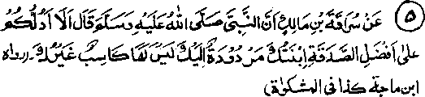

Chapter Three · Section (d): Ahadith concerning maintenance of kinship
4. Spending on one’s children

Hadith 5
Rasulullah Sallallaho alaihe wasallam once said, "Shall I not advise you on an excellent Sadaqah? It is what you spend to provide for a daughter who has been sent back to you, and who has no one but you to earn her livelihood".
Note: ‘Has been sent back to you’ means sent back to you after being widowed or divorced by her husband. It may also mean that some other circumstances have necessitated her coming back to her parents. In these cases, all that is spent to meet her requirements is treated as an excellent Sadaqah, for it combines many acts of virtue: (1) Sadaqah, (2) helping a person in distress, (3) strengthening family bonds, (4) loving care for one’s children, and (5) sympathy with the grieved, for earlier, when the children lived with their parents, they felt happy to look after their needs; but, when they come back to the parents, after having been married and having started to live happily in their own homes, both the children and the parents feel extremely grieved. Rasulullah Sallallaho alaihe wasallam once said, ‘For anyone helping a distressed person Allah Ta'ala records seventy-three grades of forgiveness, one of which shall suffice him for his well-being in all worldly , affairs and seventy two will raise him spiritually on the Day of Judgment’.
We have already referred to a number of Traditions bearing upon this subject in Chapter one, under the Hadith quoted at Serial No. 26. Umme Salamah Radhiallaho anha once asked Rasulullah Sallallaho alaihe wasallam ‘Shall I gain any reward for what I spend on the sons of Abu Salamah my previous husband, for they are my sons'? He replied, ‘Spend on them, you will be rewarded for spending on them’. (Mishkaat). Besides, it is a praiseworthy act, according to Shariah, to treat one’s children with kindness and loving care, even when they are not in need of help. Once Rasulullah Sallallaho alaihe wasallam caressed his grandsons, Hasan or Husain Radhiallaho anhuma who were with him and Aqra Ibne Haabis, the chief of Banu Tameem, who was also with him at that time said, "I have ten Children and I have never shown affection to any one of them". ‘Rasulullah Sallallaho alaihe wasallam regarded him with sharp looks and said, "He who does not show mercy, will not be shown mercy". It occurs in another Hadith that a nomadic Arab asked Rasulullah , "Do you kiss your children? We do not kiss them": Rasulullah Sallallaho alaihe wasallam replied, "How can I help it when Allah Ta’ala has made your heart devoid of tender feelings". If a person, treats children kindly when they are in distress, he gets a specific reWard in addition to that for showing kindness to his children normally.